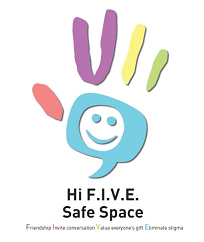

<?php include("header.php"); ?>

	<!--third box-->
	<div id="content">
		<div id="text-content">
			<h1>Implementing Hi F.I.V.E.</h1>
			    <p>If you are interested in participating with Hi F.I.V.E. then please feel free to use the resources below. These resources include the Safe Space sign and our Implementation Toolkit, which outlines how any educational institution may launch the Hi F.I.V.E. for                              themselves.
                </p>
			<h2>Hi F.I.V.E. Implementation Toolkit</h2>
			    <p>If you are an outside institution or workplace interested in adapting the Hi F.I.V.E. initiative to your environment, please click on this <a href="PDFfiles/ToolKit_revised.pdf">pdf file of the toolkit</a> or the image of the Hi Five Logo. 
                </p>
		    <a href="PDFfiles/ToolKit_revised.pdf"></a>
            <p>This toolkit includes:</p>			
            <ul class="tool-kit-list">
                <li>Initiative Objectives</li>
                <li>Implementation Ideas</li>
                <li>The Pledge</li>
                <li>The Hi-F.I.V.E Logo</li>
                <li>Safe Space Door Sign**</li>
                <li>Button Template</li>
                <li>Pin Cards</li>
            </ul>
            
<div class="pdf-content">
            <div class="pdf-content-inner1">
                <h2>Hi-F.I.V.E Safe Space Poster</h2>
                <a href="PDFfiles/Doorsign4.pdf"></a>
            </div>
                <div class="pdf-content-inner2">
			    <h2>Hi-F.I.V.E Stigma Free Zone</h2>
                <a href="PDFfiles/AntiStigmaZone_v1.pdf"></a>	
            </div>    	
		</div>
            <p>**Hi F.I.V.E. SPACES provide safe places for those who struggle and or experience mental health distress to seek support and friendship.                 Download <a href="PDFfiles/Doorsign4.pdf">the PDF </a>and put it on your door to signal that you are offering a Safe Space for anyone who is in need.</p>

            <p>For any questions regarding the initiative feel free to contact Erika Horwitz Ph.D. R. Psych, Associate Director, Counseling at                          ehorwitz@sfu.ca</p>    
        </div>
	</div>
	
<?php include("footer.php"); ?>